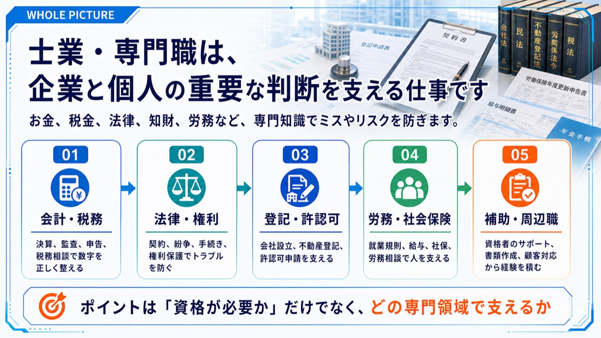
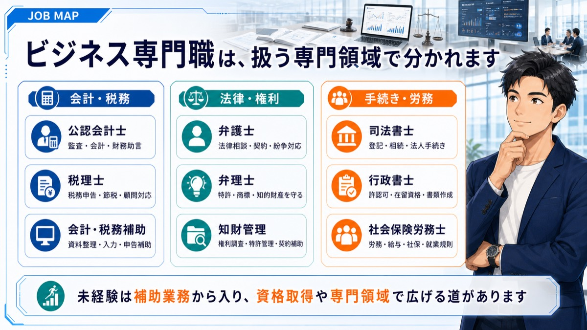
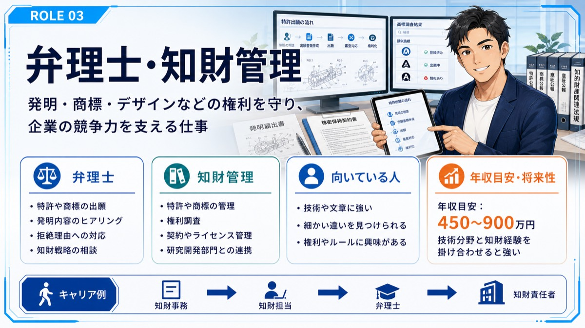
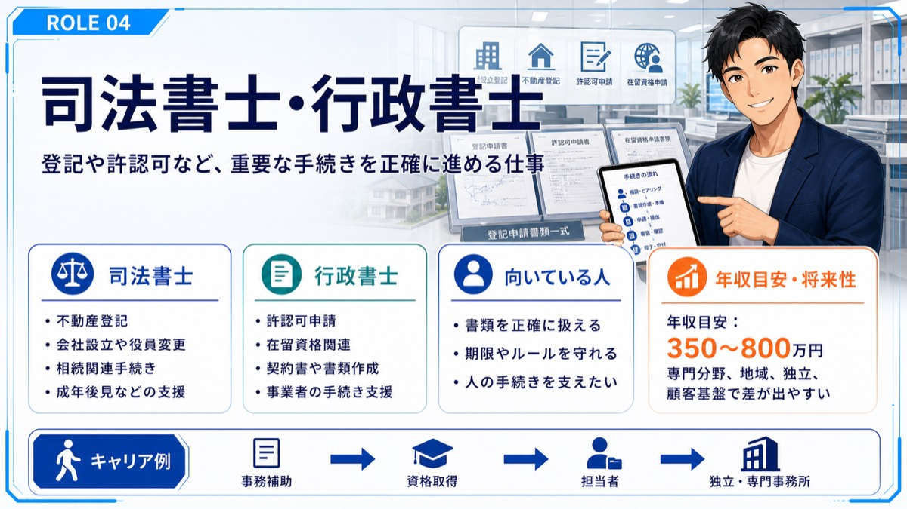
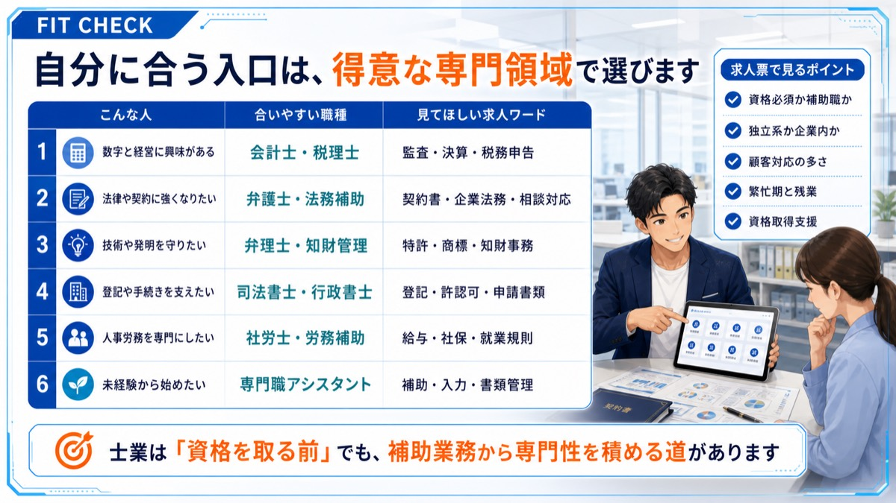

Job Lesson
ビジネス専門職士業を理解する
士業・専門職は、専門知識で企業や個人の課題を解決する仕事です。





次に見るもの
ビジネス専門職士業に興味がある方は、面接前に回答の組み立て方も確認してください。
Job Lesson
士業・専門職は、専門知識で企業や個人の課題を解決する仕事です。





ビジネス専門職士業に興味がある方は、面接前に回答の組み立て方も確認してください。